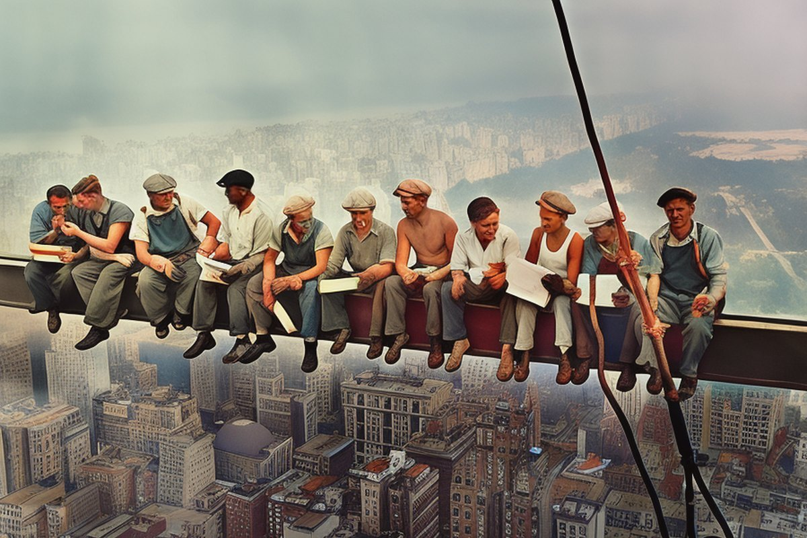
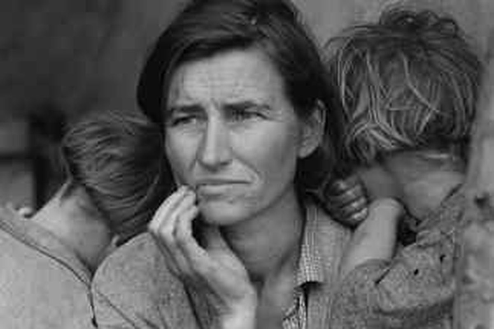
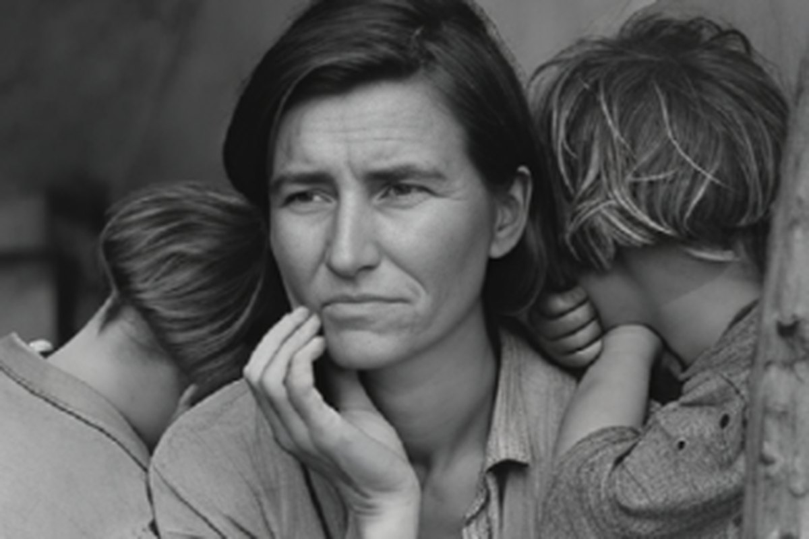
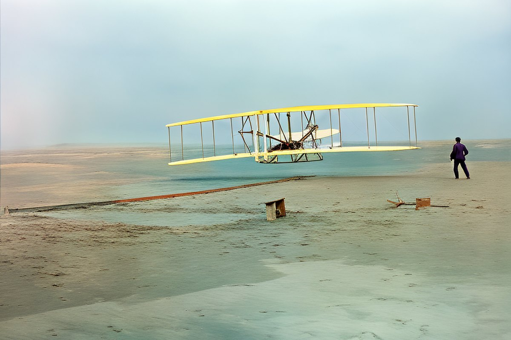
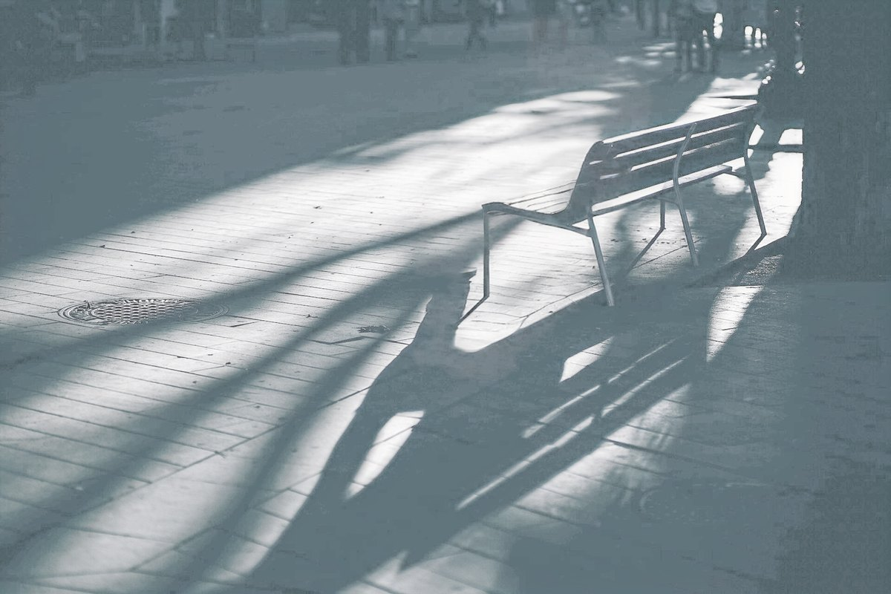
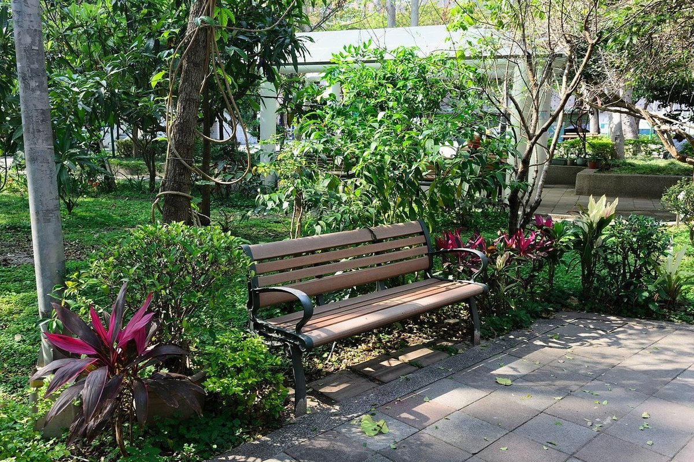
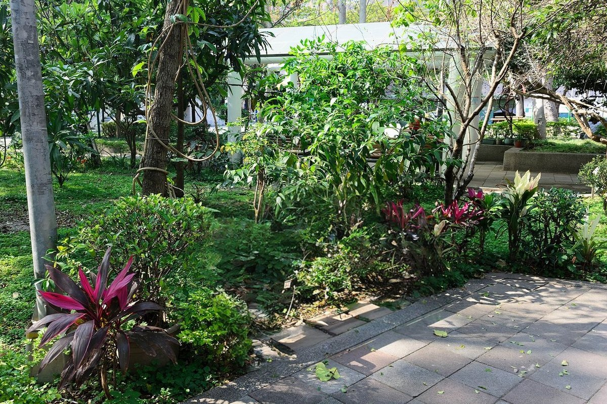
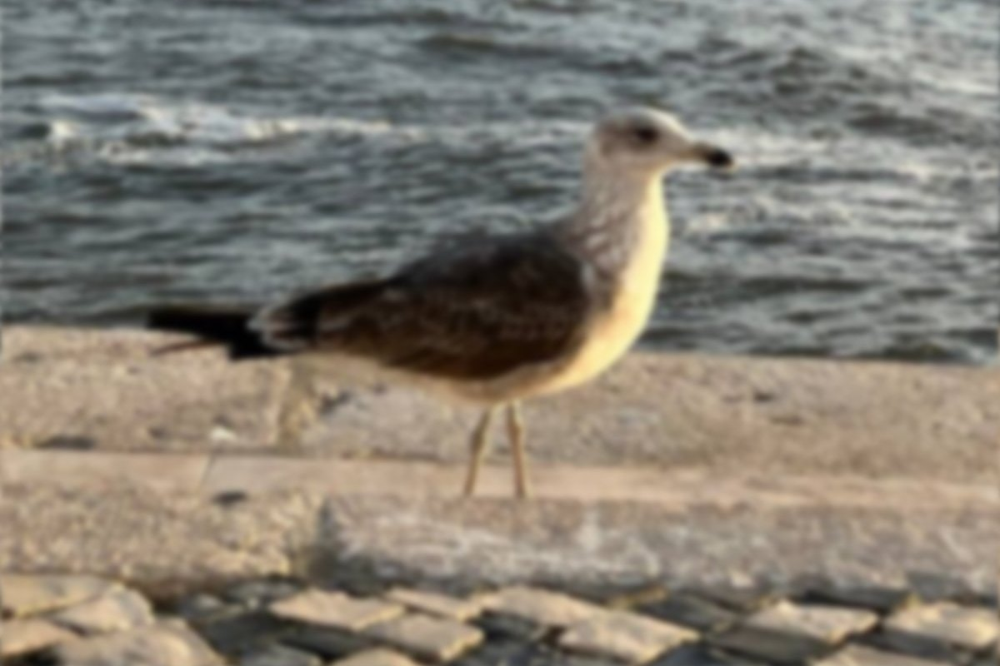
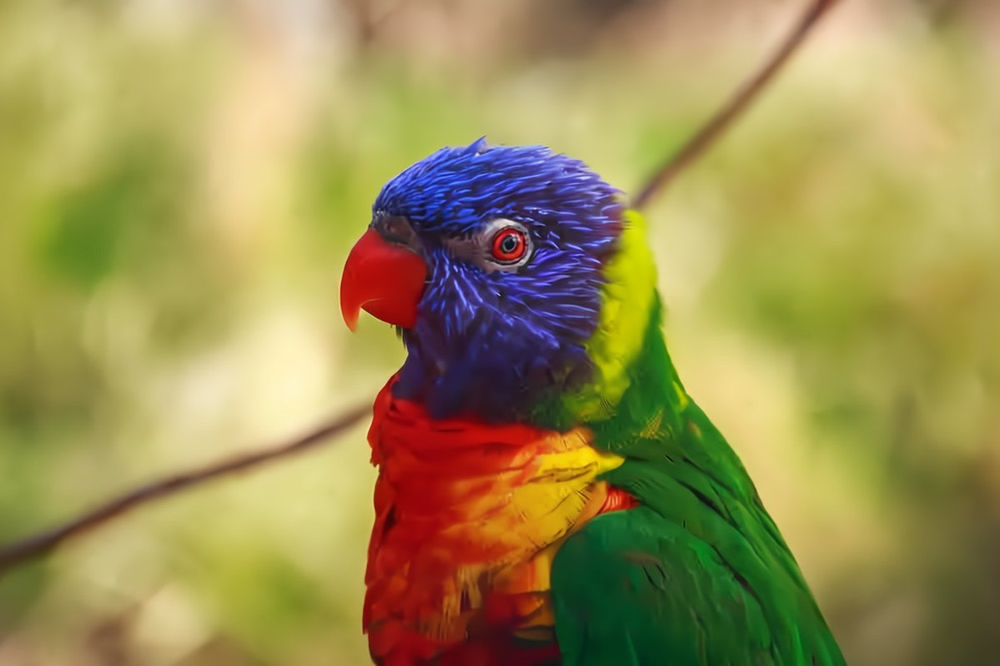
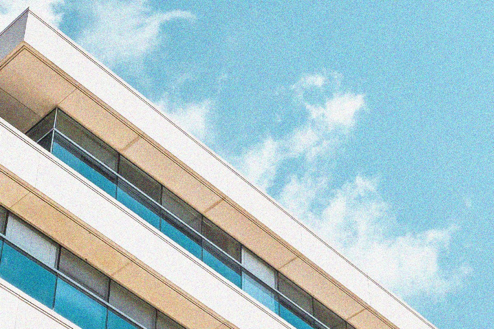

All from the released tool. Drag the divider to compare.
Faces, colour and detail come back separately, each with the model made for it.

BeforeAfter

BeforeAfter
BeforeAfterRemovals change the photo itself; everything else is then restored on the edited photo.

BeforeAfter

BeforeAfter
BeforeAfterCompression, noise and darkness, each with a model that estimates its own strength or lets you set it.

BeforeAfter
BeforeAfterSAM 3 turns clicks, boxes, strokes or a name into regions. Each region gets its own model and strength and is processed at full resolution; removals and replacements go first, and everything else is restored on the edited photo.
The code rebuilds RAP as a local web app with current models. It runs on an NVIDIA GPU with 8 GB of memory or more.
Click, drag a box, paint, or type a name such as “face” or “sky”. SAM 3 draws the masks; a person can be matted with soft edges.
Restoration, denoising, JPEG artifacts, motion blur, faces, colorization, low light, object removal and generative fill. The rest of the photo gets its own model.
Every main control is rendered in advance, so sliders respond immediately. Compare with the original, then export with up to 4× upscaling.
RAP brings these models together; each keeps its own license.
@article{jiang2023restore,
title={Restore anything pipeline: Segment anything meets image restoration},
author={Jiang, Jiaxi and Holz, Christian},
journal={arXiv preprint arXiv:2305.13093},
year={2023}
}